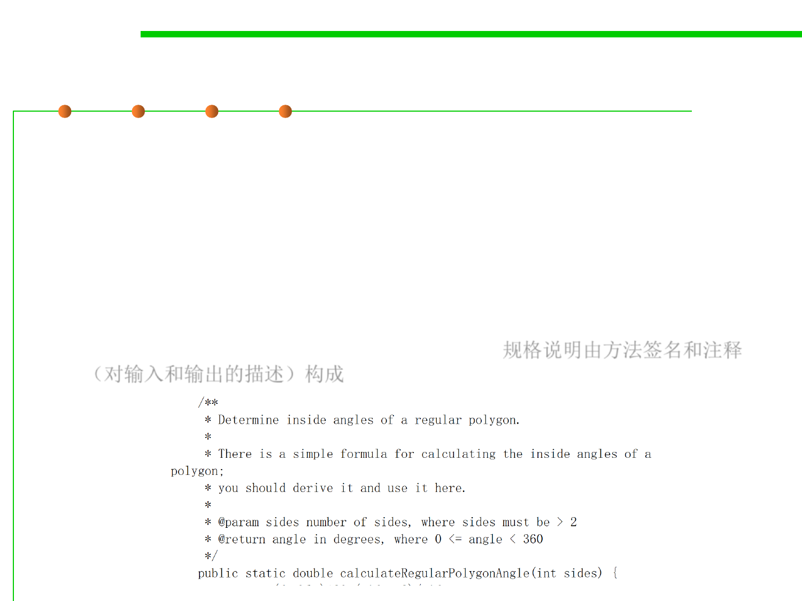

Test-First Programming
7.5 Testing and Test-First Programming
▪ The specification describes the input and output behavior of the
function.
– It gives the types of the parameters and any additional constraints on
them (e.g. sqrt’s parameter must be nonnegative).
– It also gives the type of the return value and how the return value relates
to the inputs.
– In code, the specification consists of the method signature and the
comment above it that describes what it does. 规格说明由方法签名和注释
（对输入和输出的描述）构成